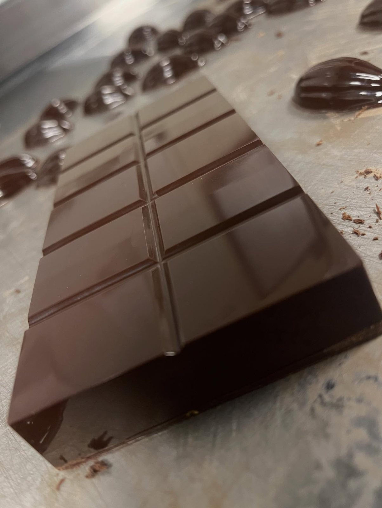
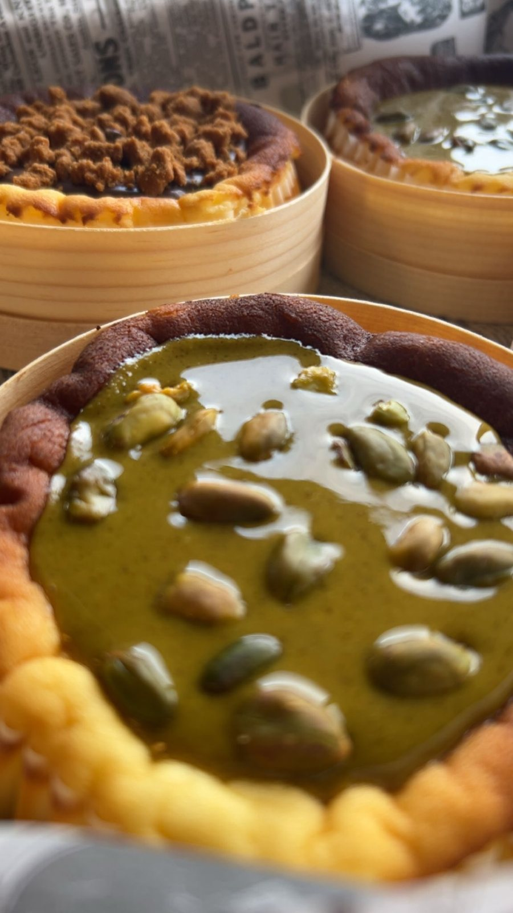

1 / 4
Le chocolat
Du chocolat de couverture, travaillé et tempéré chez nous pour les coques, les ganaches et les décors. C'est lui qui donne le croquant net d'un trompe-l'œil et la longueur en bouche d'un entremets.
Une belle pâtisserie avec de mauvais ingrédients, c'est juste un décor. Nous choisissons nos matières premières avant de dessiner quoi que ce soit.


1 / 4
Du chocolat de couverture, travaillé et tempéré chez nous pour les coques, les ganaches et les décors. C'est lui qui donne le croquant net d'un trompe-l'œil et la longueur en bouche d'un entremets.

2 / 4
Des fruits frais, choisis mûrs, et des purées de fruits sans arôme ajouté. Fraise, framboise, figue, mangue, citron : la carte suit les saisons, parce qu'un fruit hors saison n'a pas de goût.

3 / 4
Pistache, noisette, amande, cacahuète. Nous les torréfions et préparons nos pralinés nous-mêmes pour obtenir ce goût profond, impossible à imiter.

4 / 4
Du vrai beurre, de la crème entière et de la vanille en gousse. Pas de préparation en poudre, pas de mélange tout prêt : nos crèmes sont montées chaque jour.
Pâtes, crèmes, inserts, glaçages, pains et viennoiseries : tout ce qui est en vitrine sort de notre laboratoire. C'est plus long, et c'est exactement pour cela que c'est meilleur.
Une allergie ou un régime particulier ? Demandez conseil en boutique ou par message avant de commander, nous vous indiquerons les créations adaptées.
Dites-nous la date, le nombre de convives et ce qui vous ferait plaisir. Nous revenons vers vous avec une proposition et un devis.